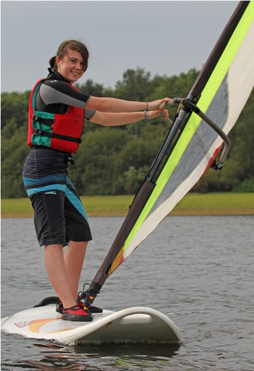
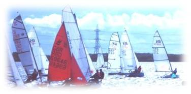

|
RYA Approved and Accredited Training Centre
|
|
Latest News
Open Day - May 7th |
The annual Tata Steel Sailing Club Open day tales place on Saturday, May 7th.
Why not come along and see the club's new facilities? Bring the whole family along; There's something for everyone: casual sailor, experienced racer, or total novice; from the very young to the more senior people.
There will be boats available that you can sail by yourself, or, if you prefer, take a cruise around the lake with one of our many experienced and qualified dinghy instructors in a larger multi-person boats |

| | 
|
There are canteen facilities and full bathroom facilities. You just need to bring some swimwear and your own soaps and towels if you plan to try the sailing for yourself.
Those that just want to come along and watch the fun will find lots to interest them on a great family day out.
|
| Those that prefer to try the windsurfing will find lots to do, with a whole fleet of windsurfers at the club |

|
|
Welcome
The club is situated three miles south of Port Talbot, South Wales and was formerly known as the Corus Sailing Club, Margam.
The reservoir is over one mile long by approximately half a mile wide, where racing takes place every Sunday throughout the whole year (for those brave enough!) and also on Saturdays, Tuesday evenings and Wednesday evenings through the Summer months.
Please note that you DO NOT need to be employed by Tata Steel to become a member!!

 Click to bookmark or share Click to bookmark or share
Club Booklet: The Club Booklet is now available, thanks very much to Bob Taylor's efforts.
It will be available on the Club Booklet page until it is revised
Working Party News: Keep an eye out on the Projects Page page for news on working parties
2011 Solo Welsh National Event
The 2011 Solo Welsh National Event took place at the Tata Steel Sailing Club, Margam, between 30th April and 1st May.
Please click here to view or download the Notice Of Race
Keep an eye on the Solo Fleet page for more news on Solo Events |